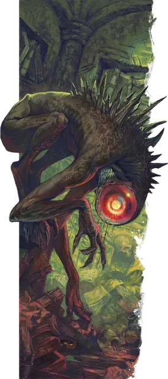

Нотик
Nothic
Средняя Аберрация, Нейтральная Злая

Класс Защиты 15 Инициатива +3 (13)
Хиты 45 (6к8 + 18)
Скорость 30 футов
| мод | спас | ||
|---|---|---|---|
| СИЛ | 14 | +2 | +2 |
| ЛОВ | 16 | +3 | +3 |
| ТЕЛ | 16 | +3 | +3 |
| мод | спас | ||
|---|---|---|---|
| ИНТ | 13 | +1 | +1 |
| МДР | 10 | +0 | +0 |
| ХАР | 8 | −1 | −1 |
Чувства пассивное Восприятие 14, Истинное зрение 120 футов
Языки Подземный
Опасность 2 (450 опыта; БВ +2)
Действия
Мультиатака. Нотик совершает две атаки Когтями.
Когти. Бросок рукопашной атаки: +5, досягаемость 5 фт. Попадание: 8 (1к10 + 3) Рубящего урона.
Разлагающий взгляд. Спасбросок Телосложения: Сл 13, одно видимое нотиком существо в 120 футах. Провал: 17 (5к6) Некротического урона. Успех: Только половина урона.
Бонусные действия
Странная проницательность (Перезарядка 6). Спасбросок Мудрости: Сл 14, одно видимое нотиком существо в 120 футах. Провал: Нотик магическим образом узнаёт один факт о цели или её секрет.
Бонус мастерства +2
Среда обитания Подземье
Сокровища Магические
Нотик
Свидетель чертовщины
Жажда запретных знаний превратила нотиков в проклятых охотников за тайнами и секретами, которые никто не должен знать. Бывшие учёные, они превратились в существ с искажёнными чужеродными телами и одним гигантским немигающим глазом. Нотики не помнят ничего о своей прошлой жизни. Теперь их разум поглощён бесконечным поиском мистических тайн и невероятных истин. Они ищут откровения среди забытых развалин, и в этом им помогает сверхъестественный взгляд, с помощью которого они могут видеть сквозь магические иллюзии, разлагать плоть врагов и красть секреты тех, кто мешает их поискам.
Лишь немногие нотики пытаются избавиться от проклятия, превратившего их в причудливых монстров. Другие даже не подозревают о своём состоянии, а большинству уже всё равно.